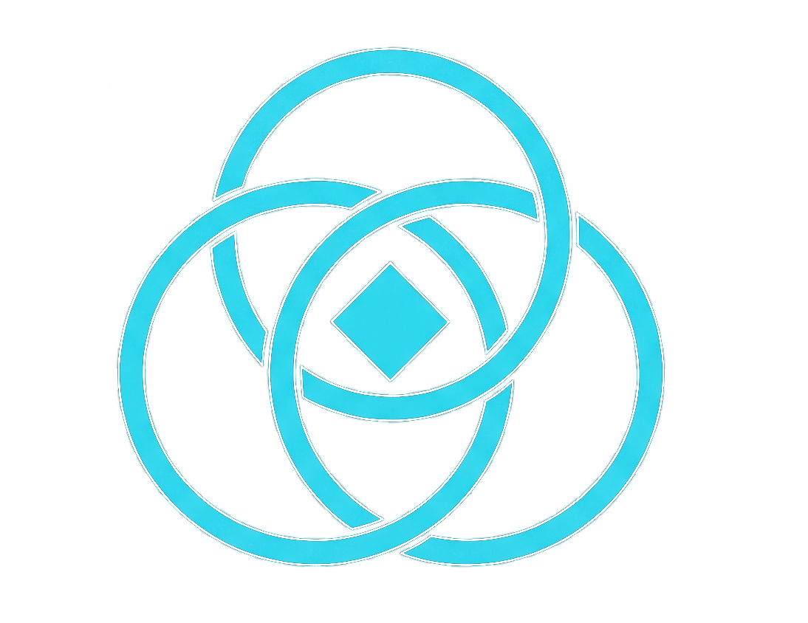

Curing Production Friction.
An agentic orchestration layer for high-fidelity synthesis via modified open-source cinematic backends.
Directorial Input Parsing
Translating narrative vision into deterministic camera and lighting vectors.
SCLC Directorial Core
Managing scene logic, character weight, and environmental physics to ensure synthesis adheres to directorial standards.
Temporal Anchoring (URIG)
Utilizing relational graphs to enforce object and entity consistency across multiple generated sequences.
Open-Source Orchestration
Orchestrating modified high-performance open-source backends via proprietary directorial weight distribution and kinetic refinement.
Narrative Integrity Export
Backend
Modified OS
Consistency
Verified
Metadata
Embedded
Provenance
C2PA
Delivering production-ready assets with complete directorial control.
Vibhav Nigam
Founder & Solo Architect
Graduate of the Satyajit Ray Film & Television Institute. Jury Award recipient for excellence in editing. Nine years as a post-production specialist across feature films, web series, and commercial media.
"The architecture behind Narrabrain was designed from inside the edit bay — built by someone who spent years translating a director's intent into the exact frame, and who understood precisely why no machine could do what even a junior editor could."
Patent Pending — Provisional Filed, May 2026